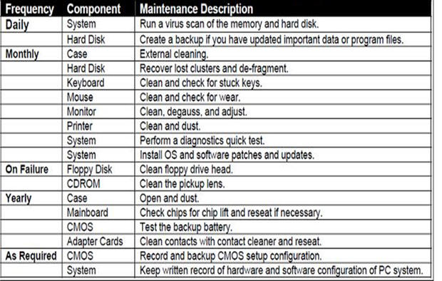

SubTopic 3: Servicing and Maintenance
Qn21. Differentiate between computer servicing and computer repair
computer servicing is the practice of keeping computers in a good state of repair WHILE
Computer repair is the process of identifying, troubleshooting and resolving problems and issues in a faulty computer.
Qn22. List any five reasons for servicing a computer
- Early Detection of Issues
- Prevention against Viruses and Malware
- Speeding up Computer performance
- Maximizing Software Efficiency for Productivity
- Preventing Data Loss
- Extending computer Life
Qn23. Suggest any five activities carried out during servicing of a computer

Qn24. Suggest the procedure for cleaning the system case
- Gather your supplies. You will need a screwdriver, compressed air (either in a can or via a blower), a small vacuum cleaner / blower that can fit in narrow crevices, a toothbrush, and 99% isopropyl alcohol liquid
- Power down the computer and unplug all of the peripherals
- Setup an area where you can blow dust. A workbench near the window is a good choice.
- Unscrew and open the case side panel. NB: Set the screws aside so that you don't lose them
- Do an initial vacuum cleaning to suck up the large bits of dust from the components.
- Use the compressed air to blow dust out of crevices. Take your can of compressed air or air compressor and blow out the hard to reach crevices.
- You may remove some components for deep cleaning.
Qn25. Identify any five devices used in computer laboratory maintenance and safety.
- Tweezers
- Screw drivers
- Crimping tool
- screwdriver,
- compressed air (either in a can or via a blower),
- a small vacuum cleaner / blower that can fit in narrow crevices,
- a toothbrush, and
- 99% isopropyl alcohol liquid etc